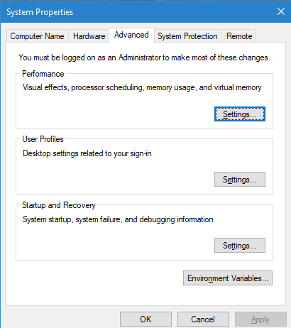

Installation¶
Installation using Docker¶
The simplest way to install the IDAES PSE Framework is by using the pre-built Docker image.
A Docker image is essentially an embedded instance of Linux (even if you are using Windows or Mac OSX) that has all the code for the IDAES PSE framework pre-installed. You can run commands and Jupyter Notebooks in that image. This section describes how to set up your system, get the Docker image, and interact with it.
Install Docker on your system¶
Install the community edition (CE) of Docker (website: https://docker.io).
Start the Docker daemon. How to do this will depend on your operating system.
- OS X
You should install Docker Desktop for Mac. Docker should have been installed to your Applications directory. Browse to it and click on it from there. You will see a small icon in your toolbar that indicates that the daemon is running.
- Linux
Install Docker using the package manager for your OS. Then start the daemon. If you are using Ubuntu or a Debian-based Linux distro, the Docker daemon will start automatically once Docker is installed. For CentOS, start Docker manually, e.g., run
sudo systemctl start docker.- Windows
You should install Docker Desktop for Windows. Docker will be started automatically.
Get the IDAES Docker image¶
You need to get the pre-built Docker “image” containing the source
code and solvers for the IDAES PSE framework. This image is stored in
an online service called Docker Hub. Full details on how to use
Docker Hub are available in the Docker Hub documentation. The name
of the Docker image that you would normally pull is
idaes/idaes_pse:latest. This name has three parts:
- idaes - means the Docker image is in the Docker Hub organization called “idaes”.
- /idaes_pse - this is the name of the Docker image for the IDAES PSE framework.
- :latest - this is a “tag” that will get the latest version.
In a point and click interface, you can type the name of this image into the search box. In a command-line interface, e.g. in Linux, then you would run a command like:
$ docker pull idaes/idaes_pse:latest
Note
If you are a software developer, you may have “cloned” the Github repository with
the IDAES source code. In this case, the script idaes-docker can be used to
pull and run the Docker image. Please run idaes-docker -h to get help and
details on how to use this script.
Run the IDAES Docker image¶
To start the Docker image, use a graphical user interface or a console or shell command-line interface.
From the command-line, if you want to start up the Jupyter Notebook server, e.g. to view and run the examples and tutorials, then run this command:
$ docker run -p 8888:8888 -it idaes/idaes_pse
... <debugging output from Jupyter>
...
Copy/paste this URL into your browser when you connect for the first time,
to login with a token:
http://(305491ce063a or 127.0.0.1):8888/?token=812a290619211bef9177b0e8c0fd7e4d1f673d29909ac254
Copy and paste the URL provided at the end of the output into a browser window
and you should get a working Jupyter Notebook. You can browse to the examples
directory under /home/idaes/examples and click on the Jupyter Notebooks to
open them.
To interact with the image directly from the command-line (console), you can run the following command:
$ docker run -p 8888:8888 -it idaes/idaes_pse /bin/bash
jovyan@10c11ca29008:~$ cd /home/idaes
...
Installation from source code¶
If you want to install the IDAES PSE framework from the source code, follow the set of instructions below that are appropriate for your operating system.
Note
These installation procedures are only fully tested on Debian-based Linux distributions.
System Requirements¶
- Linux operating system
- Python 2.7+ or 3.6+
- Basic GNU/C compilation tools: make, gcc/g++
- wget (for downloading software)
- git (for getting the IDAES source code)
- Access to the Internet
Things you must know how to do:
- Get root permissions via sudo.
- Install packages using the package manager.
Installation steps¶
sudo apt-get install gcc g++ make
We use a Python packaging system called Conda. Below are instructions for installing a minimal version of Conda, called Miniconda. The full version installs a large number of scientific analysis and visualization libraries that are not required by the IDAES framework.
wget https://repo.anaconda.com/miniconda/Miniconda3-latest-Linux-x86_64.sh
bash Miniconda3-latest-Linux-x86_64.sh
Create and activate a conda environment (along with its own copy of pip)
for the new IDAES installation (you will need to conda activate idaes **
when you open a fresh terminal window and wish to use IDAES)**:
conda create -n idaes pip
conda activate idaes
Obtain the source code for IDAES from GitHub:
git clone https://github.com/IDAES/idaes.git
Next install the main solver dependencies. You should be in the directory that you created with the git clone command (by default, called “idaes”).
sudo apt-get update && sudo apt-get install -y libboost-dev
wget https://ampl.com/netlib/ampl/solvers.tgz
tar -xf solvers.tgz
( cd solvers && ./configure && make )
( export ASL_BUILD=`pwd`/solvers/sys.x86_64.Linux && cd idaes/property_models/iapws95 && make )
wget https://ampl.com/dl/open/ipopt/ipopt-linux64.zip
unzip ipopt-linux64.zip
sudo cp ipopt /usr/local/bin/
Install the Python packages:
cd idaes
pip install -r requirements.txt
python setup.py develop # or "install"
At this point, you should be able to launch the Jupyter Notebook server and successfully run examples from the examples folder:
jupyter notebook
Solvers¶
Some of the model code depends on external solvers. The installation instructions above include the free IPOPT solver. Most of the examples can run with this solver, but a significant number of more advanced problems will not be handled well. Some other solvers you can install that may improve (or make possible) solutions for these models are:
- CPLEX: a linear optimization package from IBM. `Webpage <https://www.ibm.com/analytics/cplex-optimizer`_.
- Gurobi: LP/MILP/MIQP, etc., solvers from a company of the same name. Webpage.
ASL and AMPL¶
In some cases, IDAES uses AMPL user-defined functions written in C for property models. Compiling these functions is optional, but some models may not work without them.
The AMPL solver library (ASL) is required, and can be downloaded from from https://ampl.com/netlib/ampl/solvers.tgz. Documentation is available at https://ampl.com/resources/hooking-your-solver-to-ampl/.
Installation on Windows¶
Note
We are NOT supporting Windows at this time. Some developers on the team have had success with the following instructions, but we do not promise that they will work for all users, nor will we prioritize helping debug problems.
Python Distribution¶
Install Anaconda for Windows
Add Anaconda and Anaconda scripts to the path “c:users<user>Anaconda2” and “c:users<user>Anaconda2Scripts”. To do this, search for “Edit system variables” in Windows search. Click on “Edit system environment variables”. Click on “Environment Variables”. Under “System Variables”, search for the variable “Path” and click “Edit”
For Windows 10:
- In the new dialog box, click on “New” and add the path where you find the python.exe file. If you installed Anaconda2, this should be in “c:users<user>Anaconda2”. Copy the address and paste it here.
- Repeat for “c:users<user>Anaconda2Scripts”.
For earlier versions:
- Add path to the existing list, use semicolon as separator
- Type “c:users<user>Anaconda2;c:users<user>Anaconda2Scripts”
Restart the command prompt and type python. If the path variable was added correctly, then you should be able to see the python interpreter as shown below.
{kind=link}

Pyomo¶
See instructions for pyomo installation. As mentioned, you can either use the pip or the conda install methods which come included with the Anaconda distribution but conda may be preferable if you installed Anaconda.
To install pyomo using python’s pip package, follow these steps:
Launch the “Anaconda prompt”. You can find this in the start menu under Anaconda.
Navigate to the “Scripts” folder in Anaconda. Or simply type, where pip in the prompt. This should return 1 paths and this should be in the scripts folder.
Pip install pyomo from trunk (we recommend installing the IDAES branch of pyomo)
Install the master branch of PyUtilib from GitHub using pip:
pip.exe install git+https://github.com/PyUtilib/pyutilib
Install the master branch of Pyomo from GitHub using pip:
pip.exe install git+https://github.com/Pyomo/pyomo@IDAES
To install using python’s conda package, follow the following steps:
Launch the “Anaconda prompt”. You can find this in the start menu under Anaconda.
Navigate to the “Scripts” folder in Anaconda. Or simply type, where conda in the prompt. This should return 2 paths and one of these should be in the scripts folder.
In the scripts folder run the following commands:
conda.exe install -c conda-forge pyomo
conda.exe install -c conda-forge pyomo.extras
If the installation was successful, you should see the pyomo executable listed in the Scripts folder. You can check this using the where pyomo command.
IDAES¶
Option 1: Download zip file¶
From the IDAES repository on GitHub, click on “Clone or download” on the right in green. Click on “Download zip”.
Extract the contents in the desired directory you want IDAES in.
Open command prompt and navigate to the folder where you extracted the contents of the IDAES repository (cd <user>/…/<desired directory>/IDAES/).
- Run: python setup.py develop
Option 2: Using Git¶
Install git for Windows.
If cloning the repository from the command line, move to a directory where you want to install the IDAES repository. Then run the following command:
- git clone https://github.com/IDAES/idaes.git
Enter your github user id and password. The git installation in 1 should have added the git executable to your system path and you should be able to execute git commands from the command line.
Open command prompt and navigate to the folder where you extracted the contents of the IDAES repository (cd <user>/…/<desired directory>/IDAES/).
- Run: python setup.py develop